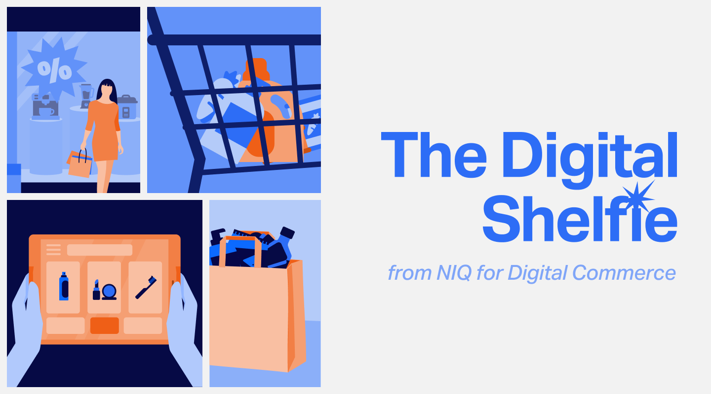
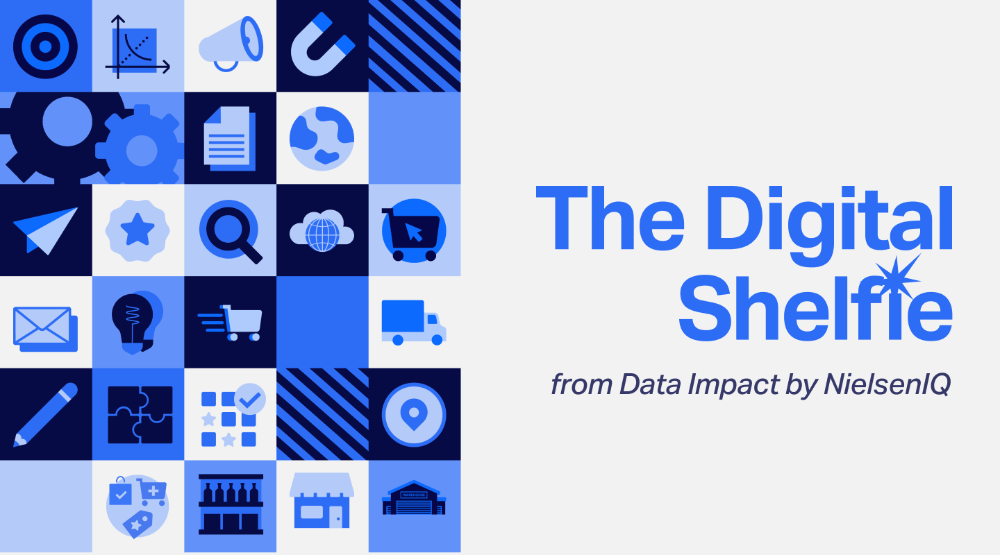
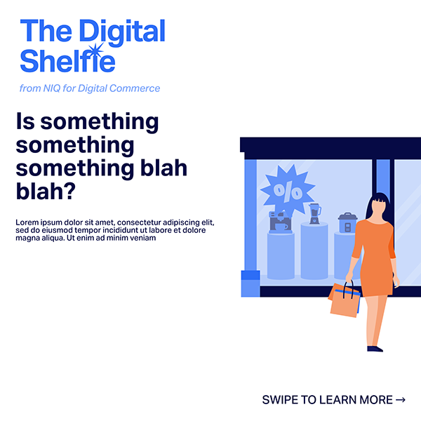
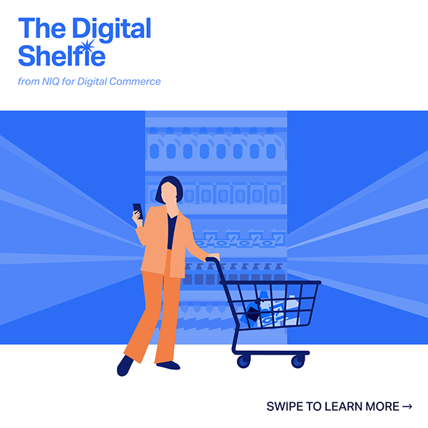
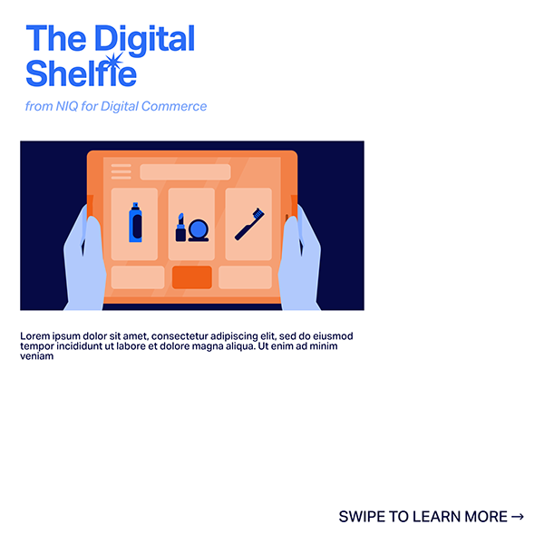
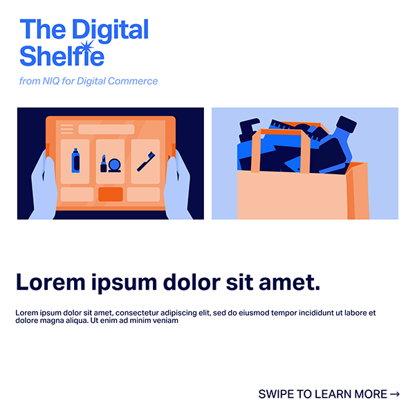
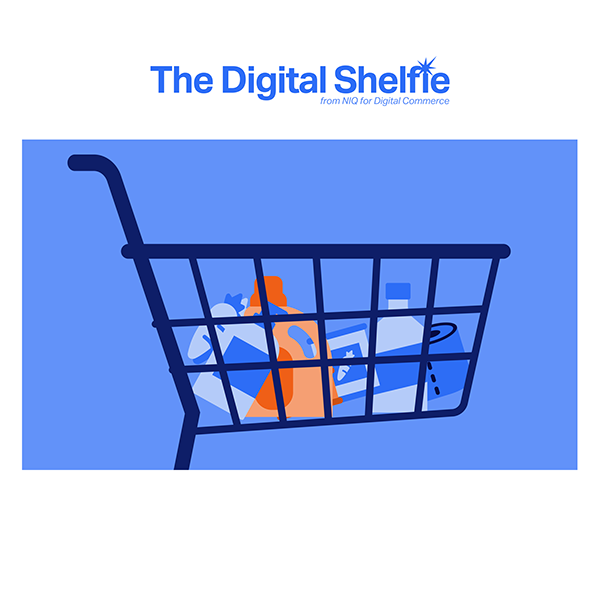

Étude de cas · Éditorial
La newsletter The Digital Shelfie
La refonte de la newsletter mensuelle de NIQ for Digital Commerce, pour qu'elle ressemble à un contenu éditorial plutôt qu'à une communication corporate.
- Client
- NIQ for Digital Commerce
- Année
- 2025
- Rôle
- Lead designer & illustratrice
- Périmètre
- Identité, modèles d'e-mail, illustration

Vue d'ensemble
The Digital Shelfie est la newsletter mensuelle de NIQ for Digital Commerce sur les tendances, les insights et l'innovation dans l'e-commerce et le digital shelf. Après l'intégration à NIQ, elle avait besoin d'une identité visuelle à la hauteur de l'expertise, de la clarté et de l'énergie de son contenu. J'ai mené sa refonte visuelle.
Objectifs
Une identité cohérente avec la marque NIQ, mais avec un ton bien à elle, un peu plus ludique.
- Une hiérarchie et une lisibilité plus claires sur mobile et sur desktop.
- Plus d'engagement grâce à des visuels éditoriaux et une marque cohérente.
- Une production plus rapide grâce à des modèles modulaires et réutilisables.
01
Audit & identité
Audit
J'ai audité les visuels et le contenu des numéros précédents et les ai comparés à d'autres newsletters du secteur. Les principaux problèmes : une mise en forme incohérente et une lisibilité médiocre.
Le nouveau système est modulaire, fondé sur une typographie affirmée, des grilles épurées et des motifs digitaux discrets. Les couleurs suivent la charte mondiale de NIQ, avec plus de contraste et d'éclat pour faire ressortir les titres et les appels à l'action.

02
Système de modèles
Modèles
J'ai conçu des modèles d'e-mail responsives avec des sections flexibles pour les articles, les chiffres clés et les appels à l'action, ainsi qu'une bibliothèque d'illustrations et de visuels pour garder des numéros cohérents. Les mêmes éléments se déclinent en posts sociaux pour promouvoir chaque numéro.





Résultat
La newsletter a désormais une identité reconnaissable, et les modèles sont devenus une référence pour d'autres communications internes.